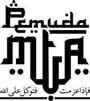

|
Jl. Ronggowarsito No. 111A Timuran, Banjarsari
Surakarta 57131, Telp (0271) 663299, Fax (0271) 663977 |
KHUSUS UNTUK PARA SISWA/PESERTA
Kumpulan
BROSUR AHAD PAGI
2022
YAYASAN MAJLIS TAFSIR AL-QUR’AN (MTA)
Sekretariat: Jl. ronggowarsito No.111A Surakarta 57131, Telp
(0271) 663299
http://www.mta.or.id/ email:
humas@mta.or.id Fax: 0271 663977
Disusun oleh
:
Ust. Naryanta, Gigih
Disusun
ulang oleh :
Abu
Rois

Copyright (c) 2015 Majlis Tafsir Al-Qur'an (MTA) Surakarta